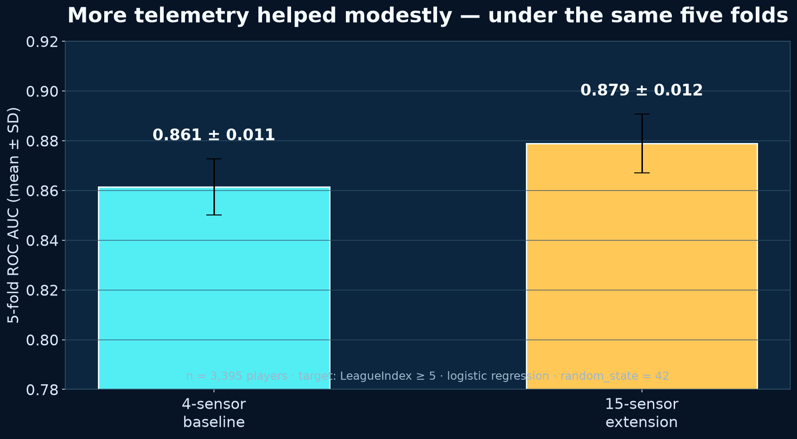

SkillCraft1
Real StarCraft II player telemetry from UCI: APM, hotkey behavior, action latency, map interaction, production actions, and competitive LeagueIndex.
Blair, Thompson, Henrey & Chen (2013) · CC BY 4.0 · raw rows are downloaded only when the analysis runs.
Dataset DOIHow much is lost with only four sensors?
Both logistic-regression conditions use the same players, target, class weighting, preprocessing, and five folds. The only intended change is 4 versus 15 telemetry features.
Real folds, not a prewritten classroom answer

Accuracy moved from 77.6% ± 1.3% to 78.9% ± 1.2%. ROC AUC moved from 0.861 ± 0.011 to 0.879 ± 0.012. Spreads are SD across five folds.
results.jsonfold-results.csvfigure PNGAI receives an evidence receipt and explicit boundaries
ROLE You are a skeptical game-analytics coauthor helping a high-school researcher. EVIDENCE RECEIPT — use only these facts • Source: SkillCraft1 Master Table Dataset, UCI ML Repository, CC BY 4.0. • Sample: 3,395 StarCraft II players; 1,878 in LeagueIndex 1–4 and 1,517 in LeagueIndex 5–8. • Research question: How much predictive performance is lost when a high-skill player classifier uses four interpretable telemetry sensors instead of all 15 available sensors? • Target: LeagueIndex >= 5 (Diamond through Professional). • Four sensors: APM, SelectByHotkeys, ActionLatency, NumberOfPACs. • Method: class-balanced logistic regression, z-scored inputs, 5-fold stratified cross-validation, shuffled with random_state=42. Both conditions use identical folds. • Four-sensor result: accuracy 0.776 ± 0.013; balanced accuracy 0.776 ± 0.013; ROC AUC 0.861 ± 0.011. • Fifteen-sensor result: accuracy 0.789 ± 0.012; balanced accuracy 0.789 ± 0.010; ROC AUC 0.879 ± 0.012. • Observed ROC AUC difference: +0.018 for the 15-sensor model. TASK Draft a 450–550 word extended abstract with the headings Background, Method, Results, Limitations, and Next Experiment. Write a title and a 45-word takeaway first. CONSTRAINTS 1. Say “associated with” or “predicted”; do not claim the telemetry causes skill. 2. Do not invent p-values, confidence intervals, participants, features, or experiments. 3. Keep mean ± SD and state that SD is across five folds. 4. Explain that LeagueIndex is an operational label, not a complete definition of expertise. 5. End with one controlled next experiment that a student could actually run. 6. Add this disclosure: “AI assisted with wording; the authors supplied and checked every number against the saved evidence receipt.”Download prompt
How Much Telemetry Is Enough?
45-word takeaway. Four interpretable gameplay sensors retained most of the discrimination achieved by all fifteen telemetry variables. Across identical five-fold splits, ROC AUC rose from 0.861 to 0.879 with the larger sensor set—a modest 0.018 gain that motivates a controlled sensor-ablation study rather than a causal claim.
Background
Game telemetry turns play into sequences of measurable actions, creating opportunities for player modeling and adaptive game systems. For a classroom agent project, however, using every available signal can make the model harder to explain. We asked how much predictive performance is lost when a classifier for higher-ranked StarCraft II players uses four interpretable behavioral sensors rather than all fifteen telemetry variables in an open dataset. The study is a bridge between a browser-game activity, where an agent sees four numeric sensors, and a reproducible analysis of real gameplay records.
Method
We used the SkillCraft1 Master Table Dataset from the UCI Machine Learning Repository (CC BY 4.0). It contains 3,395 player records. We operationalized “high skill” as LeagueIndex 5–8 (Diamond through Professional; n = 1,517) and the comparison class as LeagueIndex 1–4 (n = 1,878). The four-sensor model used actions per minute (APM), selection by hotkeys, action latency, and number of perception–action cycles. The full model used all fifteen available behavioral telemetry features. Each condition used z-scored inputs and the same class-balanced logistic-regression specification. We evaluated both conditions with identical five-fold stratified cross-validation splits, shuffled with random_state = 42. Accuracy, balanced accuracy, and ROC AUC were calculated for every held-out fold; reported spreads are standard deviations across those five folds.
Results
The four-sensor model achieved accuracy 0.776 ± 0.013, balanced accuracy 0.776 ± 0.013, and ROC AUC 0.861 ± 0.011. The fifteen-sensor model achieved accuracy 0.789 ± 0.012, balanced accuracy 0.789 ± 0.010, and ROC AUC 0.879 ± 0.012. Thus, adding eleven telemetry variables was associated with a 0.018 increase in mean ROC AUC and a 0.012 increase in mean accuracy. The result shows that the compact sensor set retained most of the full model’s discrimination on these folds, while the larger set produced a modest improvement. It does not establish that any sensor causes a player to become more skilled.
Limitations
LeagueIndex is an operational label based on competitive rank, not a complete definition of expertise. The analysis uses one historical game dataset and one linear classifier; it does not test other games, time periods, model families, or prospective players. Repeated records, unmeasured context, and telemetry construction could affect the estimates. Cross-validation reduces dependence on one train/test split but does not provide external validation. The observed metric differences are descriptive; no inferential test or confidence interval was specified in the evidence receipt.
Next Experiment
Run a preregistered sensor-ablation ladder with the same five folds: begin with APM alone, then add SelectByHotkeys, ActionLatency, and NumberOfPACs one at a time, followed by the remaining sensors in documented groups. Record fold-level ROC AUC, balanced accuracy, calibration, and inference time for every step. This controlled sequence would show which additions provide stable incremental value and whether the four-sensor model offers a useful accuracy–interpretability trade-off.
Disclosure: AI assisted with wording; the authors supplied and checked every number against the saved evidence receipt.